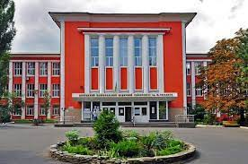
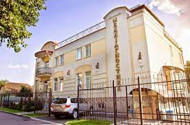
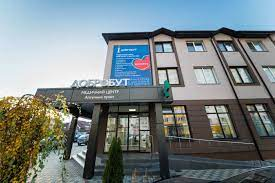

Освіта
- 2006-2008 рр. – Проходження інтернатури за спеціальністю "Неврологія" на кафедрі неврології та медичної генетики Донецького національного медичного університету на базі Донецького клінічного територіального медичного об'єднання (ДКТМО) під керівництвом професорів Є.А. Статіної та В.Г. Назаренка.
- 2000-2006 рр. – Донецький національний медичний університет, спеціальність "Лікувальна справа".
- 
- 1998-2000 рр. – Медичний ліцей при Донецькому національному медичному університеті.
Професійна діяльність
- З 2016 - посада лікаря-невролога, рефлексотерапевта та вертебролога у клініці "Меддіагностика", під керівництвом професора Гонгальського В.В.
- 
- 2015 - 2020 рр. - працюю у приватних медичних закладах міста Києва: Центр здорового життя (2015р.), клініка "Добробут" (2019-2020 рр.).
- 
- 2013 - 2015 рр. працював у Центрі клінічної неврології та нейрореабілітації DNC, виконуючи обов'язки заступника головного лікаря з медичної частини, галузь неврології та нейрореабілітації.
- 2012 - 2014 рр. пройшов клінічну ординатуру на кафедрі дитячої та загальної неврології під час післядипломного навчання в Інституті післядипломної освіти, що базувалася в Інституті невідкладної та відновлювальної хірургії (ІНВХ) під керівництвом академіка Євтушенка С.К.
-

- 2010 р. – спеціалізація з вертебрології та мануальної терапії.
- 2009 р. – спеціалізація з рефлексотерапії, голкорефлексотерапії.
- 2008-2012 рр. – робота в державних медичних установах міського та обласного рівнів міста Донецьк, лікар-невролог.
Підвищення кваліфікації
У процесі моєї практики в галузі медицини, я постійно поглиблюю свої знання та професійні вміння, здобутих у різних форматах медичного розвитку. Маю значний досвід роботи в неврології, виявлений у моїй успішній роботі як у державних, так і у приватних медичних установах. Мої знання у сфері передових методів діагностики та лікування неврологічних захворювань постійно оновлюються, щоб забезпечити пацієнтам доступ до найсучасніших та ефективних підходів у медицині. Розуміння важливості емпатії та якостей спілкування з пацієнтами є не менш значущими у моєму професійному розвитку, оскільки це відіграє ключову роль у наданні якісної та ефективної медичної допомоги.
Особисті якості
- Порядність
- Чесність
- Пунктуальність
- Саморозвиток
- Силові тренування
- Дихальні практики
- Читання літератури з психології, історії, праць з філософії
- Кулінарія дієтичних страв